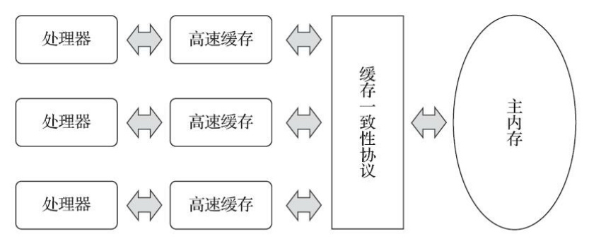
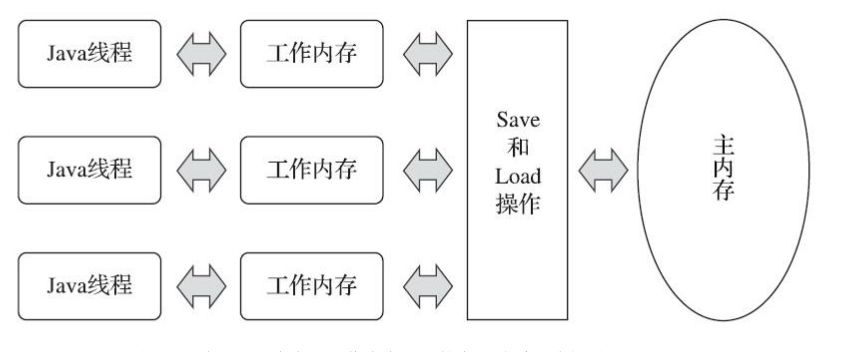
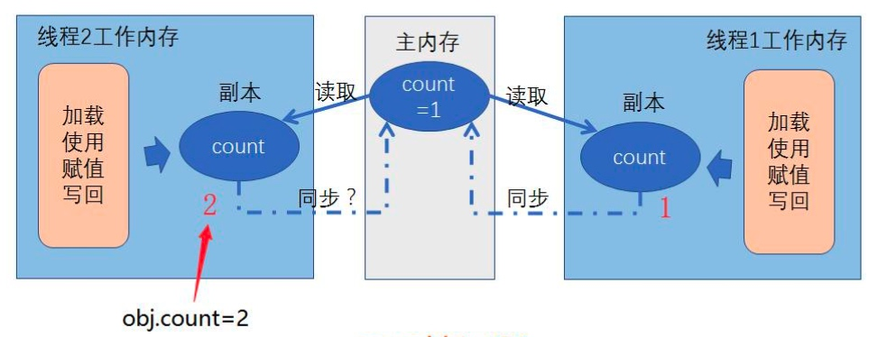
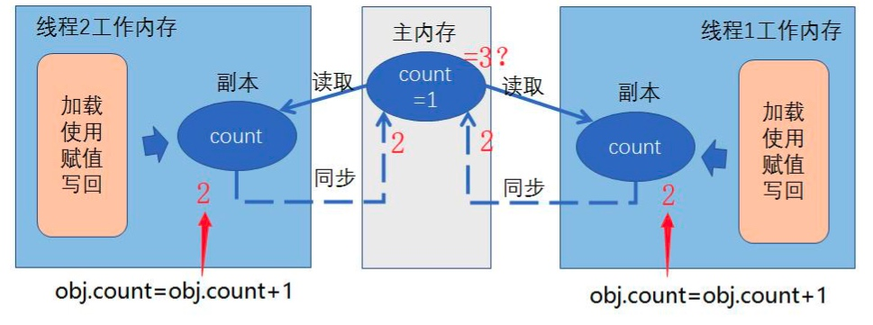
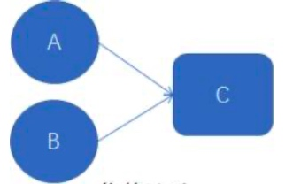

概念
在并发编程中，我们需要处理两个关键问题：线程之间如何通信及线程之间如何同步（这里的线程是指并发执行的活动实体）。通信是指线程之间以何种机制来交换信息。
在命令式编程中，线程之间的通信机制有两种
同步是指程序用于控制不同线程之间操作发生相对顺序的机制。在共享内存并发模型里，同步是显式进行的。程序员必须显式指定某个方法或某段代码需要在线程之间互斥执行。在消息传递的并发模型里，由于消息的发送必须在消息的接收之前，因此同步是隐式进行的。
Java 的并发采用的是共享内存模型，Java 线程之间的通信总是隐式进行，整个通信过程对程序员完全透明。如果编写多线程程序的 Java 程序员不理解隐式进行的线程之间通信的工作机制，很可能会遇到各种奇怪的内存可见性问题。
Java内存模型是围绕着在并发过程中如何处理原子性、可见性和有序性这三个特征来建立的
java 内存模型产生的原因
由于计算机的存储设备与处理器的运算速度有着几个数量级的差距，所以现代计算机系统都不得不加入一层或多 层读写速度尽可能接近处理器运算速度的高速缓存(Cache)来作为内存与处理器之间的缓冲:将运算 需要使用的数据复制到缓存中，让运算能快速进行，当运算结束后再从缓存同步回内存之中，这样处 理器就无须等待缓慢的内存读写了。下图说明了处理器、高速缓存、主内存之间的交互关系：

基于高速缓存的存储交互很好地解决了处理器与内存速度之间的矛盾，但是也为计算机系统带来 更高的复杂度，它引入了一个新的问题:缓存一致性(Cache Coherence)。
在多路处理器系统中，每个处理器都有自己的高速缓存，而它们又共享同一主内存(Main Memory)，这种系统称为共享内存多核系统
Java虚拟机规范中曾试图定义一种 ”java 内存模型“来 屏蔽各种硬件和操作系统的内存访问差异，以实现让Java程序在各种平台下都能达到一致的内存访问效果。
Java内存模型的主要目的是定义程序中各种变量的访问规则，即关注在虚拟机中把变量值存储到 内存和从内存中取出变量值这样的底层细节。
Java内存模型规定了所有的变量都存储在主内存(Main Memory)中，每条线程还有自己的工作内存，线程的工作内存中保存了被该线程使用的变量的主内存副本，线程对变量的所有操作(读取、赋值等)都必须在工作内存中进行，而不能直接读写主内存中的数据。
线程、主内存、工作内存的交互关系如下图所示：

java内存模型带来的问题
可见性问题

左边 CPU 中运行的线程从主存中拷贝共享对象 obj 到它的 CPU 缓存，把对 象 obj 的 count 变量改为 2。但这个变更对运行在右边 CPU 中的线程不可见，因 为这个更改还没有 flush 到主存中。
要解决共享对象可见性这个问题，我们可以使用 volatile 关键字或者是加锁
竞争问题

图中两个加 1 操作是并行的，不管 是线程 A 还是线程 B 先 flush 计算结果到主存，最终主存中的 Obj.count 只会增 加 1 次变成 2，尽管一共有两次加 1 操作。
要解决上面的问题我们可以使用 java synchronized 代码块
重排序
在执行程序时为了提高性能，编译器和处理器常常会对指令做重排序。重排序分三种类型：
- 编译器优化的重排序。编译器在不改变单线程程序语义的前提下，可以重新安排语句的执行顺序。
- 指令级并行的重排序。现代处理器采用了指令级并行技术（Instruction-Level Parallelism， ILP）来将多条指令重叠执行。如果不存在数据依赖性，处理器可以改变语句对应机器指令的执行顺序。
- 内存系统的重排序。由于处理器使用缓存和读 / 写缓冲区，这使得加载和存储操作看上去可能是在乱序执行。
从 java 源代码到最终实际执行的指令序列，会分别经历下面三种重排序：
JMM 属于语言级的内存模型，它确保在不同的编译器和不同的处理器平台之上，通过禁止特定类型的编译器重排序和处理器重排序，为程序员提供一致的内存可见性保证。
数据依赖性
数据依赖性:如果两个操作访问同一个变量，且这两个操作中有一个为写操 作，此时这两个操作之间就存在数据依赖性。数据依赖分为下列 3 种类型，上面 3 种情况，只要重排序两个操作的执行顺序，程序的执行结果就会被改变。
依赖关系：

很明显，A 和 C 存在数据依赖，B 和 C 也存在数据依赖，而 A 和 B 之间不存 在数据依赖，如果重排序了 A 和 C 或者 B 和 C 的执行顺序，程序的执行结果就 会被改变。
不管如何重排序，都必须保证代码在单线程下的运行正确，连单线 程下都无法正确，更不用讨论多线程并发的情况，所以就提出了一个 as-if-serial 的概念。
as-if-serial
as-if-serial 语义的意思指：不管怎么重排序（编译器和处理器为了提高并行度），（单线程）程序的执行结果不能被改变。编译器、runtime 和处理器都必须遵守 as-if-serial 语义。
为了遵守as-if-serial语义，编译器和处理器不会对存在数据依赖关系的操作做重排序，因为这种重排序会改变执行结果。但是，如果操作之间不存在数据依赖关系，这些操作可能被编译器和处理器重排序。
happens-before
在 Java 规范提案中为让大家理解内存可见性的这个概念，JSR-133 提出了 happens-before 的概念，通过这个概念来阐述操作之间的内存可见性。如果一个操作执行的结果需要对另一个操作可见，那么这两个操作之间必须存在 happens-before 关系。这里提到的两个操作既可以是在一个线程之内，也可以是在不同线程之间。
happens-before 关系保证正确同步的多线程程序的执行结果不被改变。与程序员密切相关的 happens-before 规则如下：
- 程序顺序规则：一个线程中的每个操作，happens-before 于该线程中的任意后续操作。
- 监视器锁规则：对一个监视器锁的解锁，happens-before 于随后对这个监视器锁的加锁。
- volatile 变量规则：对一个 volatile 域的写，happens-before 于任意后续对这个 volatile 域的读。
- 传递性：如果 A happens- before B，且 B happens- before C，那么 A happens- before C。
- start() 规则：如果线程A执行操作 ThreadB.start()（启动线程B)，那么 A 线程 的ThreadB.start() 操作 happens-before 与线程 B 中的任意操作
- join()规则：如果线程 A 执行曹邹 ThreadB.join()并成功返回，那么线程 B 中的任意操作 happens-before 与线程A从 ThreadB.join() 操作成功返回。
- 线程中断规则： 对线程 interrupt 方法的调用 happens-before 与被中断线程的代码检测到中断事件的发生。
注意： 两个操作之间具有 happens-before 关系，并不意味着前一个操作必须要在后一个操作之前执行！happens-before 仅仅要求前一个操作（执行的结果）对后一个操作可见，且前一个操作按顺序排在第二个操作之前。
内存屏障
Java 编译器在生成指令序列的适当位置会插入内存屏障指令来禁止特定类型的处理器重排序，从而让程序按我们预想的流程去执行。
- 保证特定操作的执行顺序。
- 影响某些数据(或则是某条指令的执行结果)的内存可见性
编译器和 CPU 能够重排序指令，保证最终相同的结果，尝试优化性能。插入一条 Memory Barrier 会告诉编译器和 CPU:不管什么指令都不能和这条 Memory Barrier 指令重排序。
Memory Barrier 所做的另外一件事是强制刷出各种 CPU cache，如一个 Write-Barrier(写入屏障)将刷出所有在 Barrier 之前写入 cache 的数据，因此， 任何 CPU 上的线程都能读取到这些数据的最新版本。
JMM 把内存屏障指令分为 4 类
- LoadLoad barrier
Load1: LoadLoad: Load2 确保load1 数据的装载，之前与Load2及所有后续装载指令的装载
- StoreStore barrier
Store1: StoreStore : Store2 确保 Sttore1 数据对其他处理器可见（刷新到内存)之前与Store2以及所有后续存储指令的存储
- LoadStore barrier
Load1：LoadStore：Store2 确保 Load1数据装载之前与Store2以及所有后续的存储指令刷新到内存
- StoreLoad barrier
Store1: StoreLoad: Load2 确保Store1数据对其他处理器变得可见（指刷新到内存）之前与 Load2 以及所有后续装载指令的装载，StoreLoad barrier 会使该屏障之前的所有内存访问指令（存储和装载指令）完成之后，才执行该屏障之后的内存访问指令
StoreLoad Barrier 是一个“全能型”的屏障，它同时具有其他 3 个屏障的 效果。现代的多处理器大多支持该屏障(其他类型的屏障不一定被所有处理器支持)。
volatile 详解
volatile特性
volatile 变量自身具有下列特性：
- 可见性： 对于一个volatile 变量的读 总是能看到对这个volatile变量最后的写入
- 原子性： 对任意单个 volatile 变量的 读/写 具有原子性，但类似于 volatile++ 这种复合操作不具有原子性
volatile 的内存语义
内存语义： 可以简单理解为 volatile， synchronize，atomic，lock 之类的在 JVM 中的内存方面实现原则。
volatile 写的内存语义： 当写一个 volatile 变量时，JMM 会把该线程对应的本地内存中的共享变量值刷新到主内存。
volatile读的内存语义： 当读一个 volatile 变量时，JMM 会把该线程对应的本地内存中的共享变量值刷新到主内存。
public class VolatileDemo {
private volatile static boolean ready;
private static int number = 1;
private static class PrintThread extends Thread {
public PrintThread(String name) {
super(name);
}
@Override
public void run() {
while (!ready) {
System.out.println("number: " + number++);
}
}
}
public static void main(String[] args) throws InterruptedException {
new PrintThread("volatile apply").start();
Thread.sleep(2000);
ready = true;
}
}
volatile 的内存屏障
在java中 对volatile 修饰的变量，编译器在生成字节码的时候，会在指令序列中插入内存屏障来禁止特定类型的处理器重排序问题。


volatile 的实现原理
通过对 OpenJDK 中的 unsafe.cpp 源码的分析，会发现被 volatile 关键字修饰的变量会存在一个“lock:”的前缀。
Lock 前缀，Lock 不是一种内存屏障，但是它能完成类似内存屏障的功能。Lock
会对 CPU 总线和高速缓存加锁，可以理解为 CPU 指令级的一种锁。
同时该指令会将当前处理器缓存行的数据直接写会到系统内存中，且这个写 回内存的操作会使在其他 CPU 里缓存了该地址的数据无效。
在具体的执行上，它先对总线和缓存加锁，然后执行后面的指令，最后释放 锁后会把高速缓存中的脏数据全部刷新回主内存。在 Lock 锁住总线的时候， 其他 CPU 的读写请求都会被阻塞，直到锁释放。
final 关键字
final 引用不能从构造函数内逃逸
final 的两个重排序规则
对应 final 域，编译器和处理器需要遵守两个重排序规则。
- 写 final 域的重排序规则可以确保在对象引用为任意线程可见之前， 对象的 final 域已经被正常的初始化了，而普通域不具有这样的保证。
- 读 final 域的重排序规则可以确保在读一个对象的 final 域之前，一定会先读包含这个 final 域的对象的引用。
final 语义的实现
会要求编译器在final域的写之后，构造函数return之前插入一个StoreStore
障屏。
读 final 域的重排序规则要求编译器在读 final 域的操作前面插入一个
LoadLoad 屏障
synchronized 的实现原理
Synchronized关键字解析